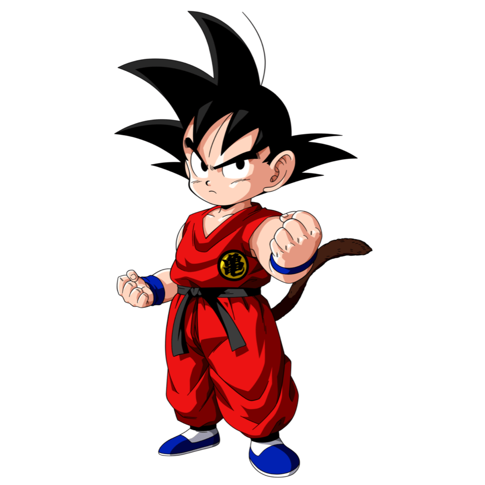
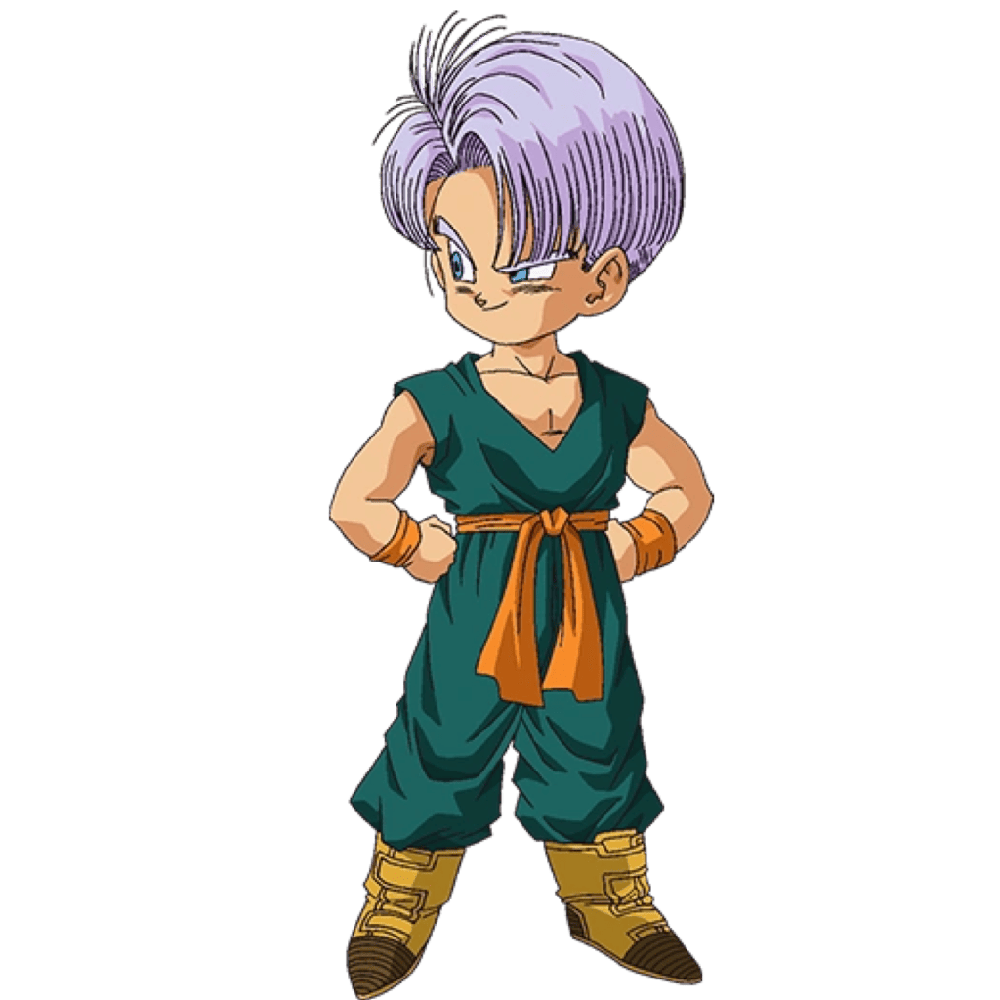
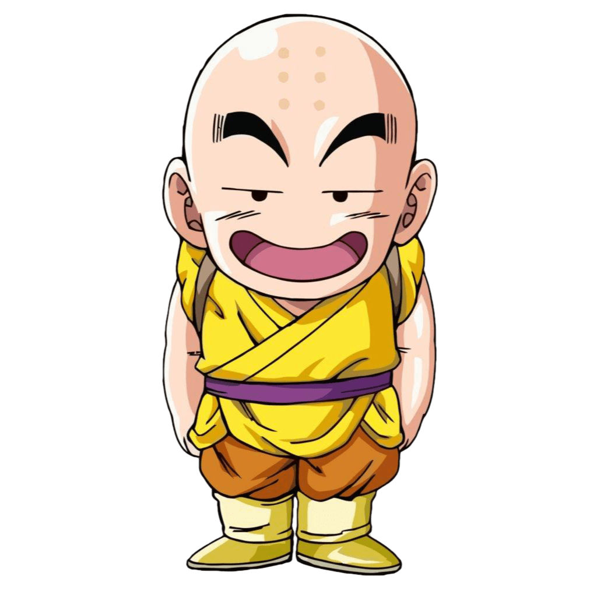
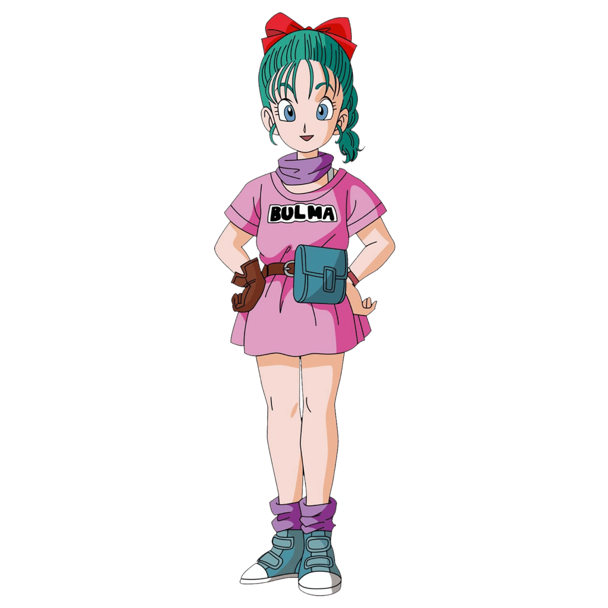
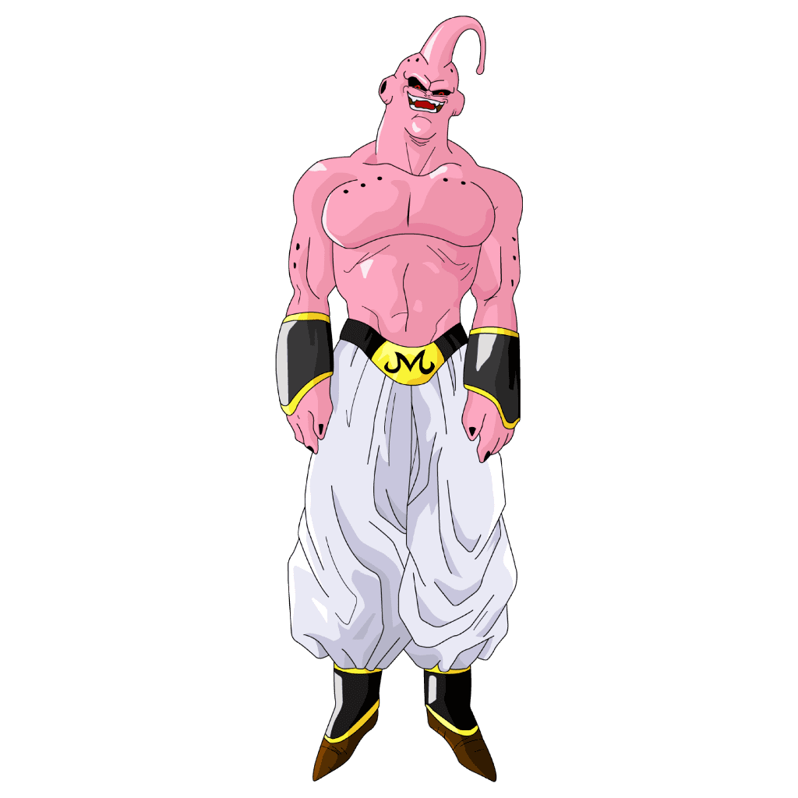
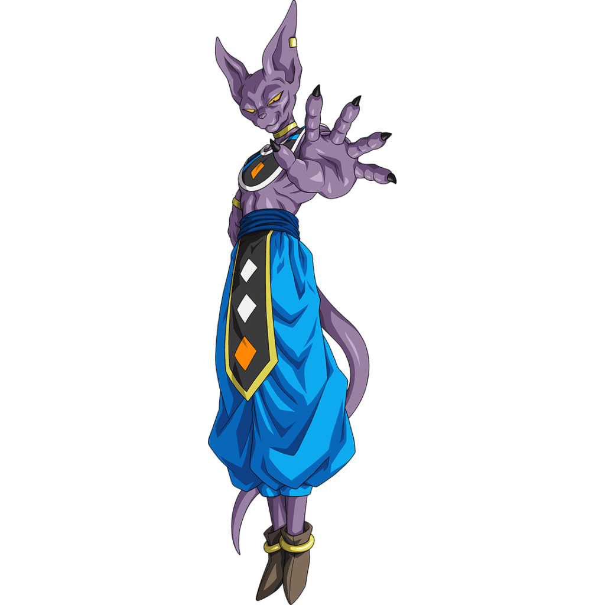
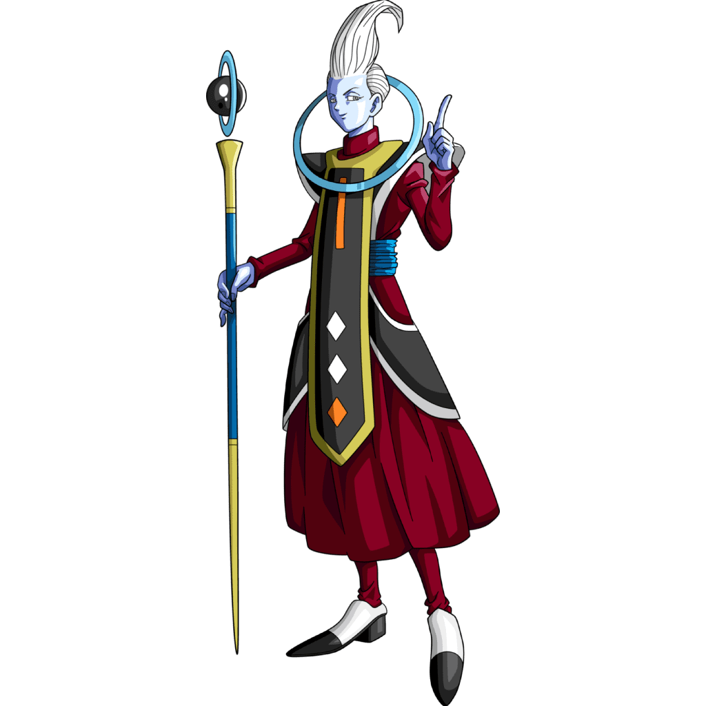
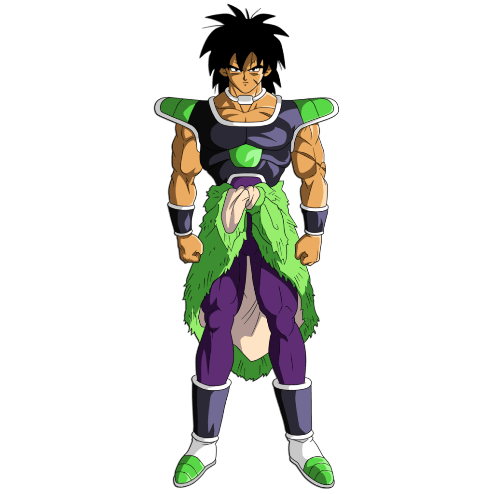
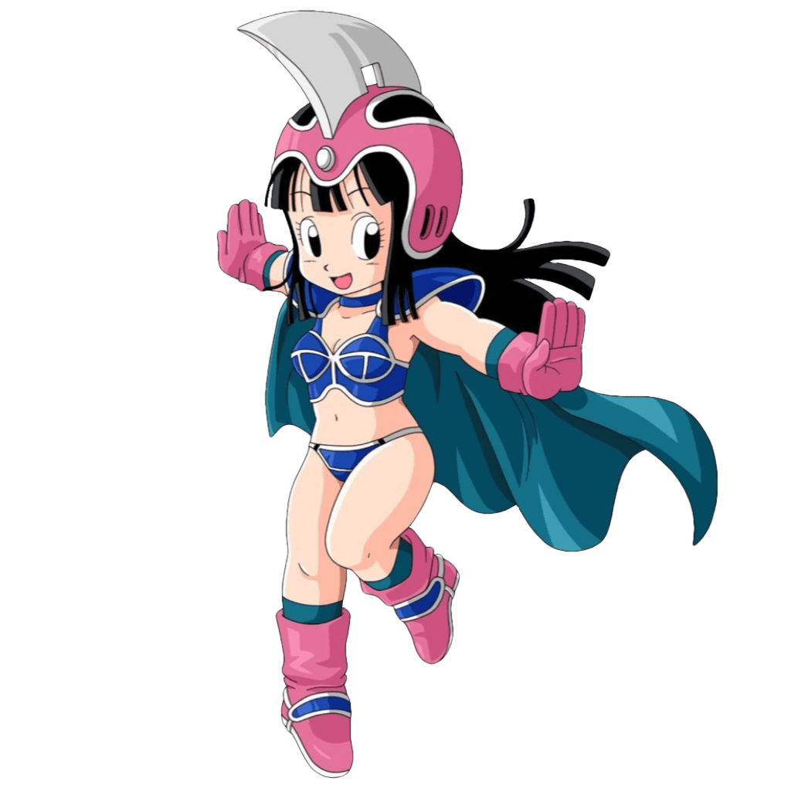
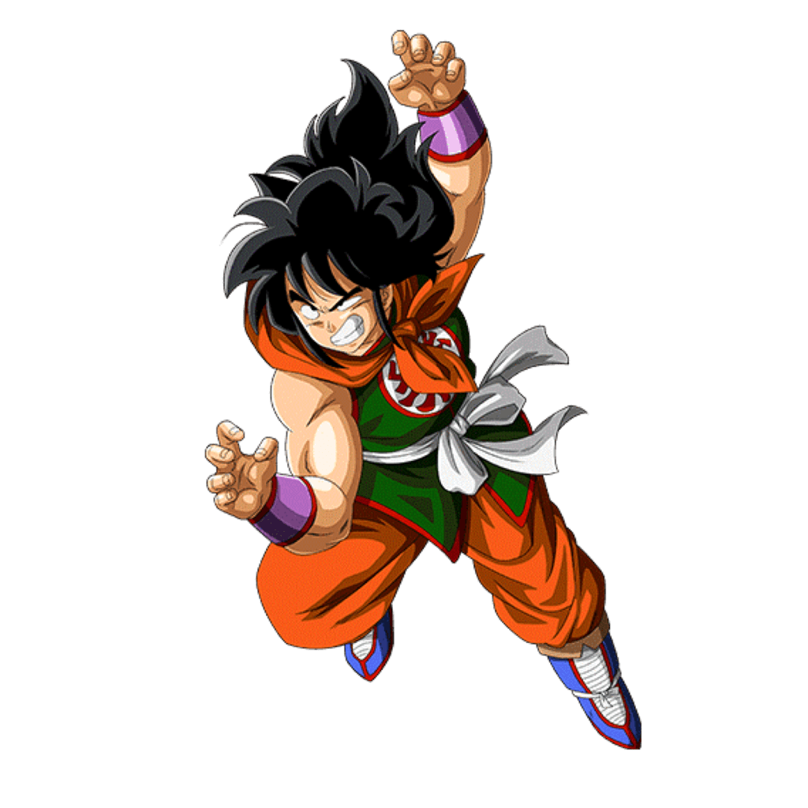

Embark on an epic journey through the world of Dragon Ball, where power knows no limits, and the adventure never stops! Whether you're a lifelong fan or just beginning your quest, this site is your ultimate destination for exploring the legendary characters, their jaw-dropping power levels, and the unforgettable sagas that shaped the Dragon Ball universe. From Goku's iconic transformations to Vegeta's relentless pursuit of strength, you’ll dive into detailed character profiles that capture the heart of each warrior. Track their ever-growing power levels and witness the fierce battles that push them beyond their limits. Relive the action-packed sagas—from Earth-shattering clashes to galaxy-wide showdowns—that made Dragon Ball a global phenomenon. With every click, prepare to unleash your inner Saiyan and explore the adventure, power, and thrill that make Dragon Ball truly legendary. The journey to greatness starts here—are you ready to power up?
As the Dragon Ball universe expanded, so did the complexity of power levels. The introduction of the Super Saiyan God and Super Saiyan Blue transformations brought a new scale of strength, where Goku and Vegeta unlocked divine power. These transformations, achieved through intense training and divine rituals, set them apart from their previous forms, allowing them to challenge gods like Beerus and even surpass their mortal limits. Power levels became less about numbers and more about the essence of their control, stamina, and the ability to tap into the right power at the right moment.
Power Levels of Popular Characters
| Picture | Name | Power Level | Race |
|---|---|---|---|
|  | Goku | Over 9000! | Saiyan |
 |
Vegeta | 18,000 | Saiyan |
 |
Frieza | 530,000 | Alien (Frieza Race) |
 |
Piccolo | 3500 | Namekian |
 |
Gohan | 14,000 | Half-Saiyan |
|  | Trunks | 25,000 | Half-Saiyan |
|  | Krillin | 1,770 | Human |
|  | Bulma | 12 | Human |
 |
Cell | Perfect Form | Bio-Android |
|  | Majin Buu | Infinite | Majin |
|  | Beerus | Unknown | God of Destruction |
|  | Whis | Unknown | Angel |
|  | Broly | Unlimited (Legendary Super Saiyan) | Saiyan |
|  | Chi-Chi | 130 | Human |
|  | Yamcha | 1480 | Human |